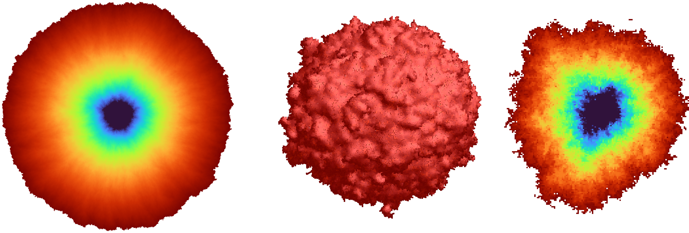

Every theorem, lemma and proposition, including the almost-sure bounds, is formalized in Lean 4 on top of Mathlib, with no sorry and no extra axioms.
Abstract
In once-reinforced random walk, introduced by Davis (1990), every edge starts with weight one and is assigned weight $β\geq1$ after its first crossing. At each step the walker chooses an incident edge with probability proportional to its weight. For sufficiently large reinforcement $β$, the expected range in the first $n$ steps was predicted by Ordemann et al. (2000) and independently by Beffara (2011) to have order $n^{d/(d+1)}$ on $\mathbb{Z}^d$. We prove the corresponding lower bound in every dimension $d\geq2$ and for every reinforcement parameter $β$.
Problem
In once-reinforced random walk on Z^d, an edge has weight 1 until first crossed and weight β≥1 afterwards. For large β, the expected range after n steps was predicted to be of order n^{d/(d+1)}. The aim is to prove the matching lower bound in all dimensions d≥2 and for every β.
Approach
The authors define a potential Φ_n from the normalized exit time of simple random walk from the set of fully traversed sites. They show that n+Φ_n−Γ_n is a supermartingale, where Γ_n increases only at first crossings of new edges. Faber–Krahn exit-time bounds control Γ, which gives E σ_k ≤ Cβk^{1+1/d} for the time σ_k of the k-th new edge crossing. An exponential supermartingale gives stretched-exponential tails. All results are formalized in Lean 4 using Mathlib.
Results
The expected range satisfies E|R_n| ≥ C^{-1}(n/β)^{d/(d+1)} uniformly in β, with a stretched-exponential lower tail, almost-sure bounds, and a matching displacement bound. The exponents of n and β are shown to be optimal for a bound that is uniform in β.

Figure 1. The range of once-reinforced random walk with \beta=50 : on \mathbb{Z}^{2} after 3\times 10^{10} steps, left; on \mathbb{Z}^{3} after 10^{9} steps, drawn as a solid, middle; and a slice through the origin, right. The color ranges on a logarithmic scale from dark blue at the sites visited first, through green and orange, to dark red at those visited last.